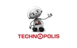
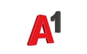
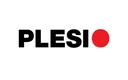

Fashion e-commerce
GIROTTI
I managed international Google Ads, segmented the product catalog, and supported reporting for a customizable footwear brand.
Read the GIROTTI case studySelected campaigns and measurement work across international e-commerce, followed by earlier client projects.
Fashion e-commerce
I managed international Google Ads, segmented the product catalog, and supported reporting for a customizable footwear brand.
Read the GIROTTI case studyAutomotive e-commerce
I prepared activity for new markets, developed OEM-focused Search campaigns, and investigated product feed issues for an air suspension specialist.
Read the AEROSUS case study
TechnopolisDeveloped cross-channel strategy, managed always-on and promotional campaigns, and coordinated advertising with partners.
Worked on localized Google Ads campaigns, tracking setup, consolidated reporting, and recurring performance reviews for international online stores.
Developed localized campaign strategies, researched keywords, and worked on ad testing and performance analysis across markets.
Worked on measurement across markets, custom reporting dashboards, and first-party and offline conversion data for advertising analysis.

A1Reviewed campaign objectives and measurement infrastructure, worked on event and data-layer definitions, and developed reporting templates and tagging documentation.
Developed a European advertising strategy and managed Google Ads Search, Display, Performance Max, and YouTube activity.

PlesioDefined campaign KPIs, recommended channels, proposed campaign tests, and supported reporting and optimization.
Worked on KPI definitions, channel recommendations, experimental campaign proposals, and results analysis.
Planned, launched, and managed paid advertising campaigns across Meta (Facebook and Instagram), TikTok, and Reddit. Also developed annual marketing plans, implemented tracking, managed Google Ads campaigns, and analyzed performance.